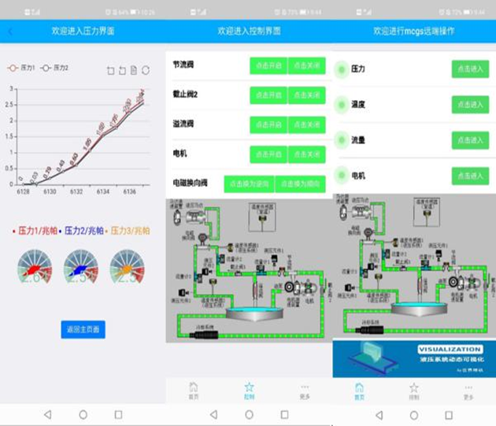
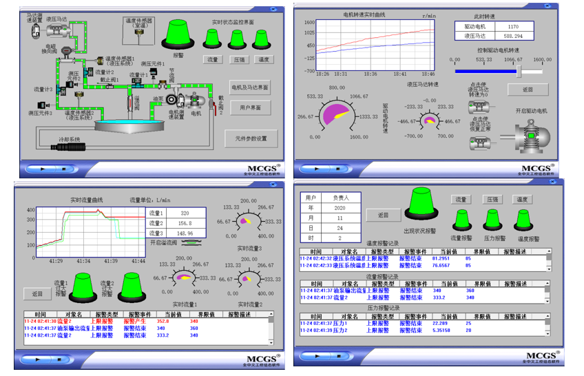

Dynamic Visualization of Hydraulic Systems
 Project Source
The project was deliberated by Yang Xingke's group and the supervisor, Lecturer Wenhai Wu, for declaring the 2020 Southwest Jiaotong University Student Research Training Program (SRTP) and successfully establishing the project.
Project Description
Utilizing the SQL server database and Internet technology, we developed a technical method to use remote APP monitoring for the MCGS simulation software, which can only be run on a computer. The project first built the hydraulic system simulation system in MCGS software, then used the front-end development technology to build the corresponding APP interface, and finally used the database and server back-end technology to synchronize the data of MCGS software and mobile APP.
Project Work Structure
■System Construction■Database Processing
■Backend Server Processing
Project Result
- Establish MCGS—database—backend server—data exchange line displayed on the front end, the two-way communication function is stable, and the data is not lost.
- The backend uses a timer to push new data so that the frontend data is updated every second. At the same time, the front-end control data is monitored, and the front-end control signal is immediately returned to the MCGS terminal.